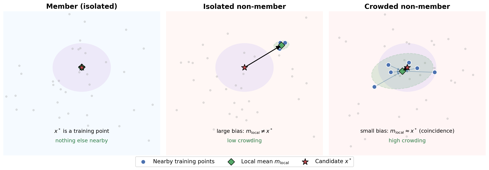
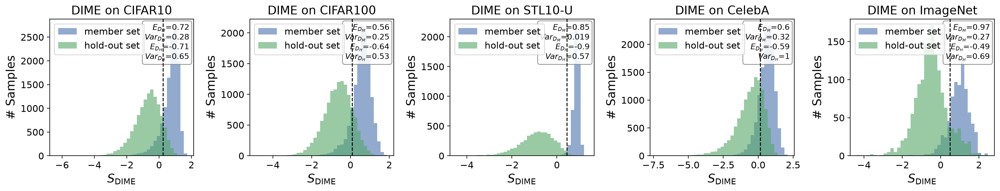
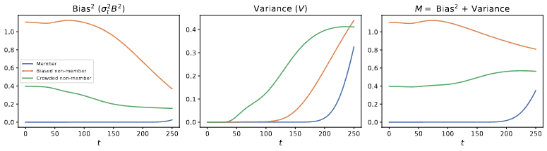
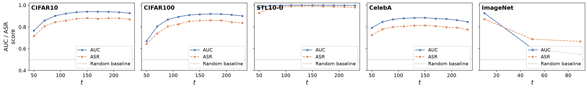

University of Illinois at Urbana-Champaign
Membership inference attacks expose whether individual records were used to train a model, yet existing attacks on diffusion models are largely heuristic and can require substantial query budgets. We introduce DIME (Denoiser Ideal Membership Error), a theoretically grounded and query-efficient framework for membership inference on diffusion models. Our starting point is an exact characterization of the optimal diffusion denoiser for a finite training set, which reveals that membership leakage is governed by the denoiser's implicit reconstruction error. This error decomposes into two complementary signals: a bias term, capturing reconstruction accuracy, and a previously unexplored local crowding term, capturing the geometry of nearby training examples. Both admit efficient estimators using only model queries, yielding a practical attack with as few as two queries. Across CIFAR-10/100, STL10-U, CelebA, and ImageNet, DIME consistently outperforms prior attacks at comparable or substantially lower query cost, improving TPR at 1% FPR by up to 3×; remarkably, its two-query variant can outperform existing 30-query baselines. Finally, we suggest, discuss, and evaluate specific defenses to counteract such powerful membership tests.

The exact finite-set optimal denoiser is a soft nearest-neighbor decoder: every training point gets a posterior responsibility for a given noisy query, and the model's implicit reconstruction is the responsibility-weighted mean of the training set.
Reconstruction error from this retrieval splits exactly into bias (distance from the posterior mean to the candidate) and crowding (dispersion of the responsible points). DIME estimates both from as few as two forward queries to the network.
Illustrative summaries of the experiments in the paper — see the preprint for full numbers, checkpoints, and datasets.

DIME scores for members and hold-out data separate cleanly across every dataset tested, with the gap between distributions driving the low-false-positive gains over prior attacks.

On synthetic data, a crowded non-member can have small bias like a true member, but its variance rises much earlier — the sum recovers a clean separation that bias alone would miss.

Smaller DDPM checkpoints hold a broad plateau of strong AUC/ASR across timesteps, while the larger ImageNet Guided Diffusion model is most vulnerable at early, low-noise timesteps.
Against differentially private training, DIME's advantage — like prior attacks' — is driven back toward chance, consistent with what DP is meant to guarantee.